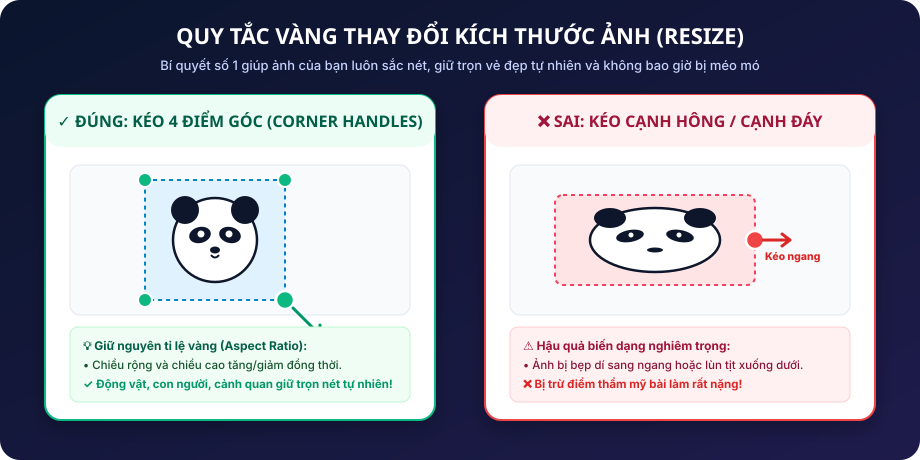
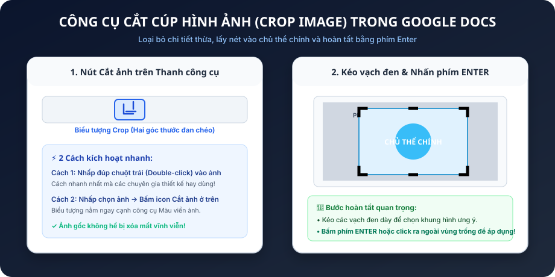
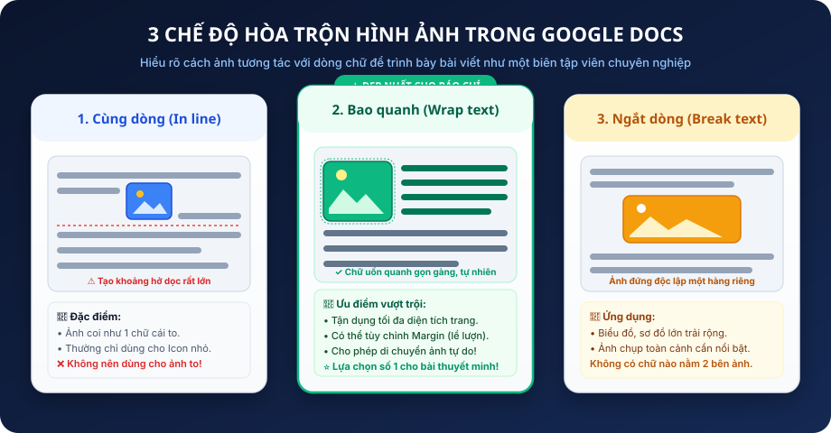
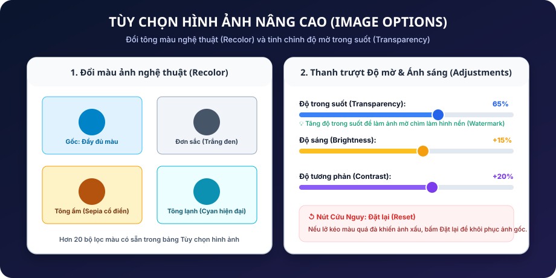
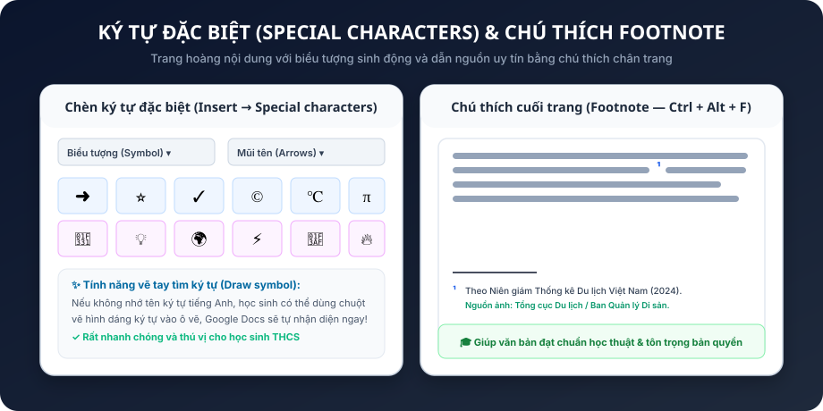

Một tài liệu chỉ toàn chữ đen sì sẽ khiến người đọc buồn ngủ sau 2 phút! Hôm nay, chúng ta sẽ học cách chèn ảnh chuẩn tỉ lệ, uốn chữ quanh hình nghệ thuật và tạo siêu liên kết thông minh.
100% dòng văn bản liên tục, không có minh họa trực quan, link dán trần dài 5 dòng gây vỡ trang.
Ảnh sắc nét bao quanh chữ (Wrap text), hyperlink gọn gàng `Ctrl + K`, icon ⭐ sinh động và Footnote chuẩn mực.
Biến Google Docs từ một quyển vở viết chữ thành một trang báo điện tử sinh động, thu hút mọi ánh nhìn.
Nắm vững Quy tắc 4 góc giữ nguyên tỉ lệ Aspect Ratio, cấm kéo méo.
Cắt cúp lấy nét chủ thể, chỉnh Recolor đổi màu và làm mờ hình nền.
Làm chủ 3 chế độ hòa trộn và tùy chỉnh khoảng đệm Margin 3.2mm.
Tạo siêu liên kết `Ctrl+K`, chèn ký tự đặc biệt và ghi chú nguồn uy tín.
Khoa học não bộ chứng minh: Mắt người tiếp nhận và giải mã hình ảnh nhanh gấp 60.000 lần so với việc đọc từng chữ cái!
Hình ảnh giữ chân người đọc không lướt qua bài viết. Một bài báo cáo hay một tờ rơi học tập có ảnh đẹp sẽ nhận được điểm đánh giá cao hơn hẳn!
"Nếu có thể diễn tả bằng một hình ảnh hoặc sơ đồ rõ ràng, đừng bao giờ bắt người đọc phải tự tưởng tượng qua 5 trang chữ!"
Menu: Chèn (Insert) → Hình ảnh (Image):
Lấy file `.png`, `.jpg` lưu sẵn trong thư mục máy (ảnh vẽ, bài tập scan, ảnh gia đình).
Khung tìm kiếm Google mở ngay cạnh tài liệu. Kéo thả ảnh trực tiếp, không cần tải về máy!
Chèn ảnh từ đám mây cá nhân hoặc album điện thoại tự động đồng bộ.
Dán trực tiếp link web của ảnh hoặc bật webcam máy tính chụp ảnh selfie nộp bài.
Khi nhấp chuột chọn 1 bức ảnh, một khung viền màu xanh dương sẽ bao bọc cùng 8 điểm chấm điều khiển:
Điểm an toàn tuyệt đối! Chiều rộng và chiều cao thay đổi đồng thời.
Vùng nguy hiểm! Chỉ kéo một chiều duy nhất khiến ảnh méo bẹp.
Cần gạt xoay ảnh tự do (Rotate Handle) theo bất kỳ góc nghiêng nào!
● Chấm xanh (Góc) = An toàn | ■ Chấm đỏ (Cạnh) = Nguy hiểm
Aspect Ratio là tỉ lệ giữa Chiều rộng và Chiều cao của một bức ảnh.
Kéo cạnh ngang làm ảnh bị dẹp bè ra; kéo cạnh dọc làm ảnh bị bẹp dí lùn tịt. Thầy cô chấm điểm nhìn vào sẽ thấy bài làm thiếu chỉn chu và bị trừ điểm rất nặng!

Một bức ảnh chụp phong cảnh có thể dính người lạ hoặc biển quảng cáo thừa thãi. Hãy dùng công cụ Cắt ảnh (Crop):

Đây là chế độ mặc định của Google Docs khi em vừa chèn ảnh vào. Ảnh được đối xử như một chữ cái khổng lồ trên dòng kẻ!
Chỉ dùng cho các icon nhỏ xíu (kích thước cỡ 16–24px) như biểu tượng cảm xúc, logo môn học đi liền ngay sau chữ.
Cấm dùng cho ảnh chụp phong cảnh hoặc ảnh khổ vừa/lớn! Vì nó sẽ đẩy dòng chữ phía sau lên cao, tạo khoảng trống dọc to tướng cực kỳ xấu.
⚠️ Hãy chuyển sang Wrap text ngay khi chèn ảnh!
Wrap text (Bao quanh văn bản) là chế độ kinh điển được mọi nhà xuất bản sách báo và tạp chí thế giới áp dụng:

Ảnh đứng độc lập một hàng riêng biệt ở giữa trang. Dòng chữ phía trên dừng lại, dòng chữ tiếp theo nhảy xuống dưới đáy ảnh. Thích hợp cho biểu đồ to.
Ảnh đóng vai trò như một bức tranh nền (Background). Chữ viết đè lên mặt ảnh. Cần kết hợp tăng độ mờ để chữ đọc được rõ.
Ảnh đè lên che khuất chữ bên dưới. Dùng cho tem niêm phong, nhãn dán sticker hoặc con dấu đỏ phê duyệt bài thi.
Khi bật chế độ Wrap text, Google Docs sẽ cho em chọn ô Lề (Margin). Đây là khoảng cách từ mép ảnh đến chữ xung quanh:
Nút menu thả xuống nằm ngay cạnh các biểu tượng hòa trộn dưới chân ảnh!
Vịnh Hạ Long là một trong những kỳ quan thiên nhiên thế giới nổi tiếng nhất của Việt Nam được UNESCO hai lần công nhận là Di sản Thiên nhiên Thế giới. Nơi đây sở hữu hàng nghìn hòn đảo đá vôi kỳ vĩ muôn hình vạn trạng nhô lên giữa làn nước biển xanh như ngọc bích.
Du khách đến với Hạ Long không chỉ được ngồi du thuyền ngắm nhìn hòn Trống Mái, hòn Đỉnh Hương mà còn có cơ hội chèo thuyền kayak len lỏi qua các hang động kỳ bí để chiêm ngưỡng những thạch nhũ triệu năm tuổi.
panda chèn 1 ảnh.Nhấp chuột vào ảnh → chọn Tùy chọn hình ảnh (Image options) trên thanh công cụ để mở bảng điều khiển bên phải:
Chuyển ảnh thành tông trắng đen cổ điển, tông sepia ấm áp, hoặc tông xanh công nghệ.
Kéo thanh trượt lên 70% để làm mờ bức ảnh khi dùng làm hình nền chìm (Watermark).
Cứu những bức ảnh bị chụp tối hoặc thiếu sáng trở nên rực rỡ hơn.

Hyperlink (Siêu liên kết) là cây cầu kết nối người đọc từ tài liệu của em đến bất kỳ trang web, video clip hoặc tài liệu khác trên Internet.
Là những chữ cái màu xanh gạch chân mà mắt người đọc nhìn thấy trực tiếp trên trang. Cần ngắn gọn, lịch sự, đúng ngữ cảnh (Ví dụ: "Bách khoa toàn thư Wikipedia").
Là địa chỉ web thực sự mà trình duyệt sẽ mở ra khi người đọc nhấp chuột vào. Có thể rất dài, chứa nhiều mã hóa phức tạp, nhưng được giấu kín dưới lớp chữ hiển thị.
⚠️ Phá vỡ lề dòng, nhìn như mã lỗi virus, thiếu chuyên nghiệp!
✨ Ngắn gọn, tinh tế! Người đọc biết chính xác họ sắp được dẫn tới đâu.
http://... trên mặt chữ.https://vi.wikipedia.org/wiki/Vịnh_Hạ_Long → bấm Áp dụng. Chữ sẽ tự đổi màu xanh và có gạch chân.
Vào menu Chèn (Insert) → Ký tự đặc biệt (Special characters) để mở kho tàng hàng nghìn biểu tượng độc đáo:

Khi viết một bài báo cáo khoa học hay bài văn thuyết minh, việc dẫn nguồn ảnh và tài liệu là bắt buộc để tôn trọng tác quyền:
Đặt con trỏ chuột ngay sau từ cần chú thích → Nhấn tổ hợp phím Ctrl + Alt + F (hoặc vào Chèn → Chú thích chân trang).
Docs sẽ tự động tạo một số nhỏ ở đầu chữ (ví dụ: Hạ Long¹) và nhảy con trỏ xuống dòng chú thích ở chân trang để em ghi nguồn!
Viết một bài thuyết minh du lịch về địa điểm em muốn đến (100–150 từ):
1 Title lớn kèm Emoji, 2 Heading 1 phân đoạn rõ ràng (Cảnh quan & Món ngon).
2–3 ảnh sắc nét, ít nhất 1 ảnh Wrap text căn lề 3.2mm, kéo 4 góc chuẩn tỉ lệ.
1 Hyperlink `Ctrl+K`, ít nhất 1 ký tự đặc biệt và 1 Footnote trích dẫn nguồn ảnh.
Tạo tài liệu Google Docs giới thiệu về loài động vật em đam mê (cá voi xanh, chim cánh cụt, chó husky...).
Toàn bộ 25 trạm học tập đã được thiết lập chi tiết! Nhấp vào bất kỳ tấm thẻ slide nào đang lơ lửng trong không gian để bay tới ôn tập kiến thức.